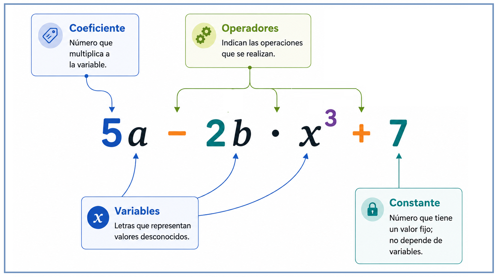
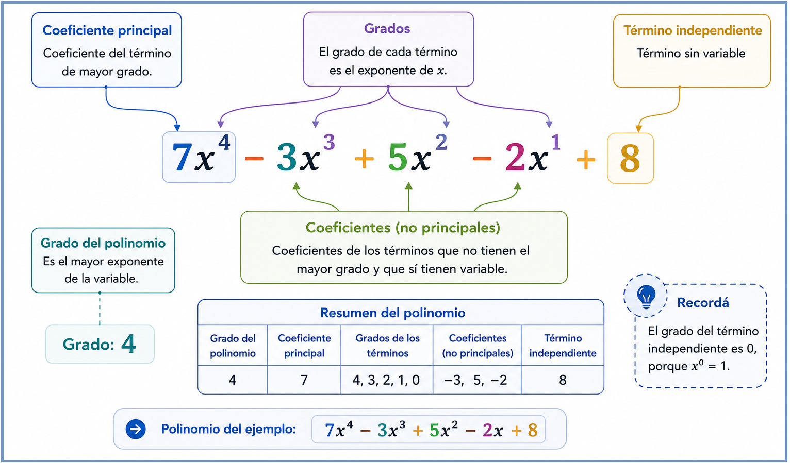

Variables, constantes y traducción
Una expresión algebraica combina números y variables mediante operaciones. Antes de operar, hay que reconocer sus partes y poder traducirla desde el lenguaje cotidiano.

Variables y constantes
Una variable es una letra que representa un valor que puede cambiar o que todavía no conocemos. Una constante es un valor fijo. El coeficiente es la constante que multiplica a una variable: todo coeficiente es una constante, pero no toda constante es un coeficiente.
Ejemplo
Una oficina cobra una tasa fija de \(\$200\) por cada trámite, más \(\$50\) adicionales por cada día de demora.
El costo total: \(200+50d\). Acá \(d\) es la variable; \(200\) y \(50\) son constantes, y \(50\) es además el coeficiente, porque multiplica a \(d\).
Evaluar una expresión algebraica
Evaluar significa reemplazar cada aparición de la variable por un valor numérico y calcular.
Traducción entre lenguaje verbal y simbólico
Mientras mirás el video, prestá atención a cómo se usa la letra \(x\) para representar un número desconocido y cómo se traduce cada frase.
Idea clave
Sustantivos del lenguaje cotidiano — "doble", "cuadrado", "diferencia", "producto", "cociente" — se convierten en operaciones matemáticas.
| Frase | Expresión |
|---|---|
| El doble de un número | \(2x\) |
| El triple de un número | \(3x\) |
| La mitad de un número | \(x/2\) |
| Un número aumentado en 5 | \(x+5\) |
| Un número disminuido en 3 | \(x-3\) |
| El cuadrado de un número | \(x^2\) |
| Cinco menos que el triple de un número | \(3x-5\) |
| La suma de dos números consecutivos | \(x+(x+1)\) |
| El doble de la suma de dos números | \(2(x+y)\) |
Qué es un polinomio y cómo se compone
Un polinomio es un caso particular de expresión algebraica: una suma de términos donde todos los exponentes de las variables son enteros no negativos.
¿Una variable o varias?
Un polinomio puede tener una o más variables: por ejemplo, \(2xy-3\) es un polinomio de dos variables, porque intervienen \(x\) e \(y\). En este espacio trabajamos principalmente con polinomios de una sola variable, que son los más frecuentes en las situaciones que vamos a ver.
Sí es polinomio
\(3x^2-5x+7\)
\(x^5-1\)
No es polinomio
\(3x^{-1}+5\) (exponente negativo)
\(\sqrt{x}+2\) (exponente fraccionario)
Notación \(P(x)\)
Un polinomio en una variable se puede nombrar con una letra mayúscula, como \(P(x)\). Escribir \(P(4)\) significa evaluar \(P(x)\) reemplazando cada \(x\) por \(4\).
Partes de un término
Mientras mirás el video, fijate qué elementos identifica en cada término.
Resumen
| Parte | Qué es | Ejemplo en \(5x^3\) |
|---|---|---|
| Coeficiente | El número que multiplica a la variable | \(5\) |
| Parte literal | La variable con su exponente | \(x^3\) |
Términos semejantes
Observá estos dos términos: \(3x^2y\) y \(5x^2y\).
Mientras mirás el video, fijate cómo se reconoce si dos términos son semejantes.
Idea clave
Dos términos son semejantes cuando tienen exactamente la misma parte literal. Solo se pueden sumar o restar entre sí los términos semejantes.
| Términos | ¿Semejantes? | Por qué |
|---|---|---|
| \(3x^2\) y \(-5x^2\) | ||
| \(4x\) y \(4x^2\) | ||
| \(2xy\) y \(-7xy\) |
Clasificación según la cantidad de términos
Mientras mirás el video, fijate qué nombre recibe una expresión según cuántos términos tiene.
Resumen
| Nombre | Cantidad de términos | Ejemplo |
|---|---|---|
| Monomio | 1 | \(7x^2\) |
| Binomio | 2 | \(3x+5\) |
| Trinomio | 3 | \(x^2-4x+7\) |
| Polinomio | 4 o más (también nombre general) | \(2x^3-x^2+5x-1\) |
Elementos de un polinomio de una variable
Conviene ordenar el polinomio de mayor a menor exponente para distinguir sus elementos.

Resumen, con ejemplo
| Elemento | Qué es | Ejemplo en \(3x^4-2x^2+x-8\) |
|---|---|---|
| Grado del polinomio | El mayor exponente de la variable | \(4\) |
| Coeficiente principal | El coeficiente del término de mayor grado | \(3\) |
| Coeficientes no principales | Los coeficientes de los demás términos con variable | \(-2\) y \(1\) |
| Término independiente | El término sin variable (grado 0) | \(-8\) |
Polinomio ordenado y completo
Un polinomio está ordenado cuando sus términos van de mayor a menor exponente. Está completo cuando no le falta ningún exponente intermedio (se puede completar agregando coeficiente \(0\)).
\(P(x)=2x^3-5x+1\) está ordenado, pero no completo: falta el término con exponente \(2\).
Completo: \(P(x)=2x^3+0x^2-5x+1\)
Sumar, restar, multiplicar
Sumar, restar y multiplicar polinomios: cada operación tiene su propia regla, pero todas parten de la misma base.
Suma y resta de polinomios
Se sacan los paréntesis, se agrupan los términos semejantes, y se combinan. Los no semejantes quedan sin combinar.
Mientras mirás el video, fijate qué hace primero: quitar paréntesis o agrupar.
Mientras mirás el video, fijate qué le pasa al segundo polinomio cuando se quitan los paréntesis en una resta.
Multiplicación y división de monomios
Antes de multiplicar polinomios completos, conviene tener claras estas dos reglas: se usan todo el tiempo.
Mientras mirás el video, fijate cómo se combinan los coeficientes y qué ocurre con los exponentes.
Idea clave
Al multiplicar monomios: se multiplican los coeficientes y se suman los exponentes de las mismas bases. Al dividir: se dividen los coeficientes y se restan los exponentes.
Ojo antes de mirar: si en el resultado aparece un exponente negativo, es correcto — significa que queda una variable en el denominador.
Multiplicación de polinomios
Mientras mirás el video, fijate qué propiedad se aplica una y otra vez.
Mientras mirás el video, fijate cuántas multiplicaciones hay que hacer en total, y qué se hace después con los resultados.
Idea clave
Monomio por polinomio: propiedad distributiva, el monomio multiplica a cada término. Polinomio por polinomio: cada término del primero multiplica a cada término del segundo, y se reducen los semejantes.
Antes de seguir
Multiplicá \((x+5)(x+2)\) y verificá tu resultado paso a paso. ¿En qué paso tuviste que reducir términos semejantes?
Multiplicaciones con un patrón fijo
Los productos notables son multiplicaciones entre polinomios que siguen siempre el mismo patrón. Conocer el patrón evita tener que multiplicar término por término cada vez.
| Producto notable | Ejemplo numérico | Resultado |
|---|---|---|
| \((a+b)^2=a^2+2ab+b^2\) | \((x+4)^2\) | \(x^2+8x+16\) |
| \((a-b)^2=a^2-2ab+b^2\) | \((x-3)^2\) | \(x^2-6x+9\) |
| \((a+b)(a-b)=a^2-b^2\) | \((x+6)(x-6)\) | \(x^2-36\) |
- 1\((x+4)^2=(x+4)(x+4)\)
- 2\(=x^2+4x+4x+16\)
- 3\(=x^2+8x+16\)
El camino inverso a multiplicar
Factorizar es expresar una suma o resta de términos como un producto de factores.
Factor común
Idea clave
Se extrae lo que está repetido en todos los términos. Para verificar, se multiplica de vuelta: \(6x^3+9x^2=3x^2(2x+3)\).
Factorización usando productos notables
Los productos notables también se pueden usar "al revés", para factorizar.
Diferencia de cuadrados
Trinomio cuadrado perfecto
Factorización de un trinomio \(x^2+bx+c\)
No todo trinomio es un cuadrado perfecto. Cuando el coeficiente principal es \(1\), se buscan dos números \(p\) y \(q\) que, multiplicados, den \(c\), y que, sumados, den \(b\).
Ejemplo
Factorizar \(x^2+5x+6\).
Se buscan dos números que multiplicados den \(6\) y sumados den \(5\): el \(2\) y el \(3\).
\(x^2+5x+6=(x+2)(x+3)\)
Cómo reconocer cada caso
| Se reconoce por... | Se factoriza como... |
|---|---|
| Todos los términos comparten un factor | factor común: \(a(b+c)\) |
| Dos cuadrados perfectos con una resta entre ellos | diferencia de cuadrados: \((a-b)(a+b)\) |
| Trinomio donde el término medio es el doble producto de las raíces | cuadrado de un binomio: \((a+b)^2\) |
| Trinomio con coeficiente principal 1 | \((x+p)(x+q)\), con \(p\cdot q=c\), \(p+q=b\) |
Simplificar, errores frecuentes y síntesis
Simplificación de polinomios
Simplificar significa reescribir un polinomio de la forma más corta posible: distribuir, ordenar por grado y agrupar términos semejantes.
- 1Distribuir: \(3x+6-x^2+4x+2x^2\)
- 2Ordenar por grado: \(-x^2+2x^2+3x+4x+6\)
- 3Agrupar términos semejantes: \(x^2+7x+6\)
Errores frecuentes: mini auditoría
Síntesis del espacio
Traducir
frase → expresión
Identificar
partes de un término
Operar
sumar, restar, multiplicar
Factorizar
el camino inverso
Cada operación algebraica es una decisión: qué términos se pueden sumar, qué propiedad aplicar y cómo verificar el resultado.